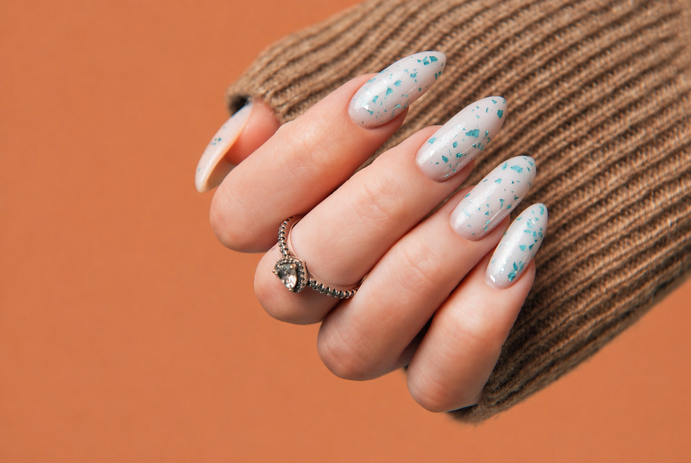

Coastal Signature Manicure
Cuticle detail, shaping, hydration, and premium polish application.
Starting at $58
Door County, Wisconsin
Door County Nails is a modern high-end studio for precision manicures, signature pedicures, and trend-led design. Every appointment is intentionally paced for quality, comfort, and long-lasting finish.

Signature Menu
Cuticle detail, shaping, hydration, and premium polish application.
Starting at $58
Extended wear gel finish with precision prep and high gloss top coat.
Starting at $72
Exfoliation, mask, therapeutic massage, and polished final detail.
Starting at $78
Trend-forward concepts, minimalist edits, and statement detailing.
Starting at $18+
Why Door County Nails
We blend editorial-level aesthetics with hospitality-first service. Our studio standards prioritize hygiene, premium materials, and meticulous execution on every visit.